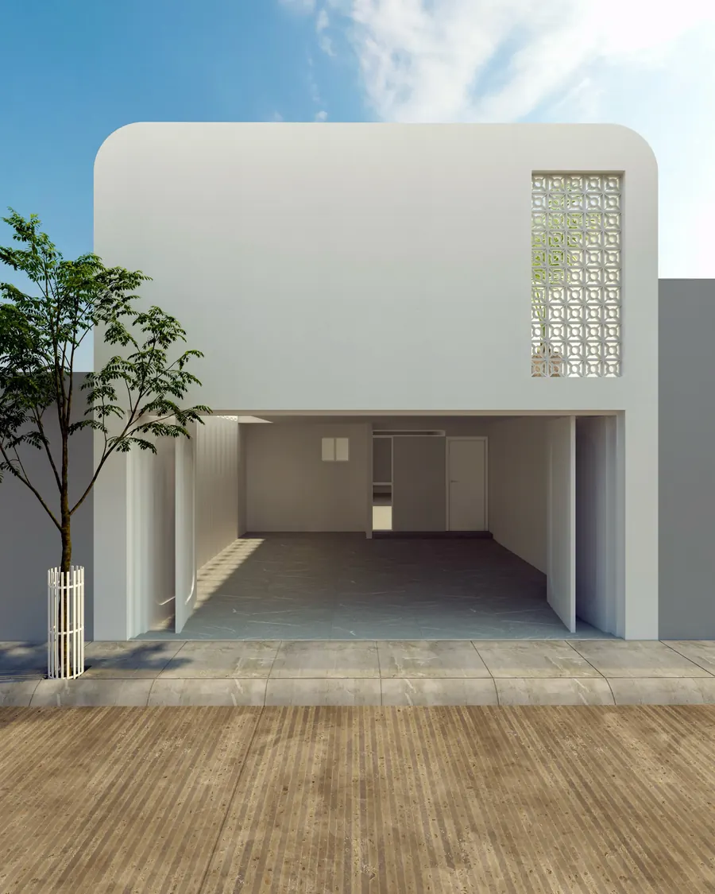

Espacios funcionales y atemporales.
Jorge Santana diseña y visualiza en 3D espacios residenciales, comerciales y de paisaje.
Desplaza · gira la maquetaCada espacio se construye por capas: estructura, luz y material.
Y vuelve a ser uno solo.
(02) Estudio
Js Interiorismo es el estudio de Jorge Santana, licenciado en Diseño de Interiores. Desde Aguascalientes, México, diseña espacios funcionales y atemporales: casas, comercios y los jardines que los rodean.
- 01Residencial
- 02Comercial
- 03Paisajismo
- 04Visualización 3D
- L. DI
- Licenciado en Diseño de Interiores
- 3ds Max + V-Ray
- Sus propios renders fotorrealistas
- Gilsa Render Awards 2024
- Participante con un baño y una cocina
- Behance · 2013
- Portafolio público desde 2013
“Espacios que no buscan impresionar. Buscan permanecer.”— Jorge Santana, en Instagram
(03) Materiales
Una paleta que se toca.
Los materiales que se repiten en su trabajo: maderas cálidas, piedra, acabados minerales y un verde salvia.
01RobleMadera clara
02NogalMadera oscura
03TravertinoPiedra natural
04MicrocementoAcabado continuo
05ChukumEstuco maya
06SalviaLaca mate
Texturas dibujadas con código, como muestra de la paleta.
(04) Servicios
Del primer trazo al último detalle.
- 01
Diseño interior residencial
Recámaras, baños, cocinas y estancias pensados para la vida diaria: primero la función, después una belleza que dura.
- 02
Espacios comerciales
Cafeterías y locales con identidad propia, donde la luz y los materiales trabajan para la marca.
- 03
Paisajismo y fachadas
Patios, jardines y fachadas que unen la arquitectura con el paisaje mexicano.
- 04
Visualización 3D fotorrealista
Renders en 3ds Max y V-Ray para ver cada material y cada luz antes de construir.
- 05
Mobiliario a medida
Closets, tocadores y vestidores diseñados a la medida, con iluminación integrada.
(05) Proyectos
Índice de proyectos
Dieciséis espacios diseñados y visualizados por Jorge Santana. Elige uno para verlo en grande.
(06) Proceso
Cinco pasos, un mismo cuidado.
Propuesta de proceso · por confirmar con el estudio
- 01
Escucha
Visita, medidas y una conversación sobre cómo vives o trabajas el espacio.
- 02
Concepto
Distribución, paleta de materiales y la idea que guía todo el proyecto.
- 03
Visualización 3D
Renders fotorrealistas para decidir con certeza antes de construir.
- 04
Proyecto ejecutivo
Planos, detalles y mobiliario a medida, listos para obra.
- 05
Ejecución
Fabricación y supervisión hasta la entrega del espacio.
(07) Contacto
Hablemos de tu espacio.
- WhatsApp[WhatsApp del estudio]
- Correo[Correo del estudio]
- EstudioAguascalientes, México
- Instagram@js.interiorismo@missyplicity
- Behancebe.net/JorgeSantana
- Los datos entre corchetes se completan con el estudio.